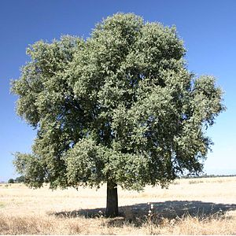
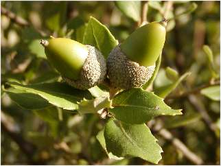

Alzina
Descripció
L'alzina (Quercus ilex L. o Quercus ilex ssp. ilex L.), també coneguda com a aglaner, aulina i bellotera, és un arbre de fullatge persistent de la família de les fagàcies. Tant «alzina» com «aulina» provenen del llatí *ilicina o *elicina, derivat d'ilex "alzina". Aglaner "que fa glans" és derivat de gla, el fruit de l'alzina. Belloter "que fa bellotes" deriva del seu fruit, la bellota, provinent de l'àrab ballu?a.
Morfologia
La capçada és ampla i densa, fulles de 3 a 7 cm el·líptiques o oblongues, subenteres (tenen lòbuls) o amb dents poc espinoses (són més espinoses les que estan a prop del terra); de color verd fosc a l'anvers i grisenques i piloses al revers amb de 7 a 11 parells de nervis laterals.
Les fulles són perennes i romanen en l'arbre entre dos i quatre anys, amb una mitjana de 2,7 anys. Coriàcies i de color verd fosc pel feix, i més clar pel revés, estan proveïdes de fortes espines en el seu contorn quan la planta és jove i en les branques més baixes quan és adulta, mancant d'elles les fulles de les branques altes.
Les alzines es conreen principalment pels seus fruits, les conegudes glans. Són uns glands de color marró fosc quan maduren (abans, lògicament verds), brillants i amb una cúpula característica formada per bràctees molt atapeïdes i denses, que els recobreixen aproximadament en un terç de la seva grandària.


Torna